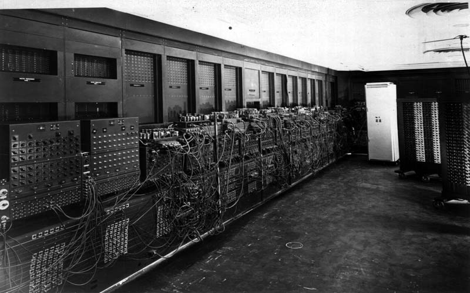

Conheça a
Interação Humano-computador
Se você é desenvolvedor, designer ou trabalha com algum tipo de interface, esse tópico é imprescindível. Clique em "Iniciar a leitura" para enriquecer seu repertório!
 Iniciar a leitura
Iniciar a leitura
Resumo
A Interação Humano-computador é caracterizada pelo seu caráter multidisciplinar, que engloba conceitos como psicologia, design, engenharia e ciências da computação. Sua evolução envolveu avanço o design de interfaces, transformando-as em mais usáveis, acessíveis, consistentes, por meio dos estudos da cognição humana. Isso foi importante porque contribuiu na criação de designs que satisfazem os usuários e facilitam no dia-a-dia dos diferentes tipos de usuários.

Definição
É o processo de interação entre o ser humano e a máquina, podendo alterar conforme o contexto de uso, incluindo tempo, ambiente físico e sociocultural. É tudo aquilo que envolve o ser humano e um sistema computacional para a solução de um problema.
Nos dias atuais, tecnologias novas surgem baseadas nos conceitos IHC e se olharmos para trás, outras já mudaram a forma que as pessoas interagem ou se comunicam. Como por exemplo: as redes sociais, tendo em vista que antes delas a perspectiva e ideia do que era comunicação se dava pelo encontro pessoal, telefonemas ou cartas. Por isso, o IHC busca responder perguntas posteriores a criação de um sistema: "O que um sitema interativo deve permitir fazer?", "O que o sistema de fato faz?", "Como ele é utilizado?", "Quais componentes as pessoas usam para inserir ou buscar uma informação?".
Esse estudo sobre interface, lógica e dados, busca fidelizar o cliente, evitar treinamento, mais produtividade do usuário, menos erros, menos custos de suporte, entre outros.

Princípios
| Clique nos cartões para ler mais
Consistência
Garanta que elementos semelhantes sejam representados de formas parecidas
Ler sobreFeedback
Informe os usuários sobre os resultados de suas ações
Ler sobreVisibilidade
Facilite o entendimento e visibilidade do estado do sistema para os usuários
Ler sobreRecuperação de erros
Facilite apagar ação e recuperação de erros sem consequências significativas
Ler sobreRestrição
Limite a gama de ações possíveis em uma interface para evitar ações indesejadas
Ler sobreAprendizado
Guie o usuário ensinando como navegar ou usar rapidamente a aplicação
Ler sobreSimplicidade
Evite distrações por meio de um design minimalista
Ler sobreModelos Mentais
Alinhe suas interfaces com experiências reais do usuário
Ler sobreAffordance
Use recursos intuitivos para garantir clareza aos usuários
Ler sobreMudanças

Década de 50
Nessa geração, os computadores funcionavam por meio de circuitos e válvulas eletrônicas, consumindo muita energia. O computador ao lado foi um desses, chamado ENIAC. Ele exigia profissonais muito expeientes para manuseá-los, sem interfaces.